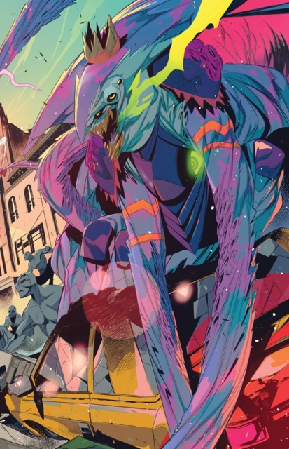

The Green Apocalyptopus
Apocalyptopus is the Green enemy the Blue Ninja Ranger; also becomes the longest-lasting member of the
original green team and second-in-command upon the departure of Jason, Zack and Trini. He effectively acts as the
team leader in the Alien Rangers series being the only one to regain his true age.The green
is power of their ancient
- CLeveland
- vidyanagr
- In United states of america

Link to index